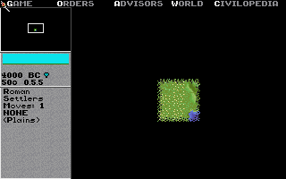

CHAPTER 6 · PROCEDURAL WORLDS
Growing a World
Every Civilization map is grown, not drawn: a drunkard's-walk blob stamper, a latitude formula, two rainfall sweeps, an erosion pass and up to 256 river attempts — four menu knobs and a 16-bit seed away from every Earth that never was. The whole machine is reimplemented on this page. Press grow.
Four questions, a flicker of drive light
Start a new game of Civilization on a random world and the setup menu asks four questions — land mass, temperature, climate, age — each with three answers, defaults in the middle. Then the drive light flickers and 4,000 tiles of planet exist: continents with mountain spines, a desert belt at the waist, jungle near the equator, tundra fraying into polar ice, rivers that reliably reach the sea. On an 80×50 grid, that flicker of work has to manufacture geography that reads as geography — and it does it with roughly a dozen constants and the C runtime's stock random number generator.
None of this was documented in 1991. What follows is the algorithm as the community
disassembled it from CIV.EXE over the following decades — chiefly
darkpanda's "Civ1 map generation explained" thread (2013–2023, in his words "fully
deciphered … fully ported to JCivED"), cross-checked against CivOne's open-source port
of the same code. The figure below runs our reimplementation of that record, stage by
stage, using the same linear congruential generator Civ itself used —
x·214,013 + 2,531,011, Microsoft C's rand() — so a given
seed and knob setting always regrows the same world.
Map.Generate.cs. Dice: the Microsoft C
LCG (×214,013 + 2,531,011) that Civ itself used, so seed + knobs is fully
reproducible. Close, not guaranteed byte-exact: the blob start box follows darkpanda
([4,71]×[8,33]; CivOne uses a wider one), and the overlap→mountains/hills reading and
the river direction rose are the documented mainline — both flagged "probable" in the
record, and the river meander term already carries one community correction (Renergy's
×2). The specials/huts overlays run the Chapter 4 formulas with this seed as the
TerrainMasterWord; huts are drawn on land squares only (in-game they are further
suppressed at cities and barbarian-visible squares).| Knob | Menu options (0 · 1 · 2) | Constant it drives | Where it bites |
|---|---|---|---|
| Land mass | small · normal · large | target = (n+2)×320 → 640 / 960 / 1,280 squares | stage A; also the river cap |
| Temperature | cool · temperate · warm | 1−n added to latitude | stage B |
| Climate | arid · normal · wet | ocean yield +4n / +n; rainfall draw rnd(0..7−2n) | stage C; also the river cap |
| Age | 3 · 4 · 5 billion years | passes = 800×(1+n) → 800 / 1,600 / 2,400 | stage D |
Stage A — a drunkard with a rubber stamp
Land is made by stamping. The generator keeps two 80×50 work buffers — the geography layer and a temporary stencil — and spawns land in chunks. Each chunk clears the stencil, picks a random start inside the box x ∈ [4,71], y ∈ [8,33], draws a random path length between 1 and 64, and then walks: stamp a three-tile L-shape — (x,y), (x+1,y), (x,y+1) — step to a random orthogonal neighbour, repeat. The walk ends when the length runs out or the walker leaves the cage [3,3]–[76,45], which keeps land clear of the map edge.
The stencil then merges into the geography, and the merge is where relief comes
from: a stencil cell landing on empty sea becomes land; landing on existing land, it
increments it. Overlap depth is elevation. In the community's reading of the
merge counter, a square stamped twice becomes mountains and a square stamped three or
more times becomes hills — so mountain chains are literally the places where drunken
walks crossed. Chunks keep spawning until total land reaches
(landmass+2)×320 — 640, 960 or 1,280 squares. On this page's reference
seed 1991 with default knobs that takes 43 chunks. A final pass squares off any 2×2
cell whose diagonals alternate land and ocean, removing impossible diagonal straits
that neither ships nor land units could legally cross.
Stage B — climate from a subtraction
Terrain starts as arithmetic on the row number. For every flat land square:
lat = |y − 29 + rnd(0..7)| ; distance from the equator, dithered lat += 1 − temperature ; the knob: shift one band either way lat = lat/6 + 1 ; integer divide into bands 0–1 → desert 2–3 → plains 4–5 → tundra 6–7 → arctic
That is the whole climate model: hot at the middle, cold at the ends, an eight-way random dither so the band edges shred instead of ruling straight lines across the map. Mountain and hill squares from stage A keep their elevation and skip the formula. One genuine oddity, visible below: this stage measures latitude from row 29, but the rainfall stage that follows measures it from row 25. The original code carries two different equators, and the +rnd(0..7) — which only ever pushes south — appears to split the difference. That reading is our observation from the record, not a community-stated fact.
Stage C — rain from two directions
Rain is a per-row budget, swept across the map twice — west→east, then east→west —
with latitude = |25 − y|. On the westerly sweep, each ocean square raises
the row's wetness by one, up to a ceiling of |latitude − 12| + 4×climate;
each land square, while the budget is positive, spends rnd(0..7−2×climate)
of it and transforms: plains green into grassland, deserts soften into plains, hills
sprout forest, tundra freezes to arctic. Mountains transform nothing but quietly eat
three extra points of wetness — a one-line rain shadow. The easterly sweep runs the
same budget with a different ceiling (latitude/2 + climate) and a warmer
table: grassland within ten rows of the rain equator becomes jungle, elsewhere swamp;
even mountains manage forest.
Notice what the climate knob actually does. A wetter setting raises the ocean ceilings and shrinks the random spend — the budget fills faster and drains slower, so the transforms reach further inland. "Arid" doesn't make deserts directly; it makes the wetness budget run out sooner, and the untransformed latitude bands are what deserts are. Coastlines facing the sweep get the rain; interiors keep the geometry lesson every schoolchild eventually learns about continental climates — emergent, here, from about fifteen lines of code.
Stage D — age, backwards
The age knob runs the erosion pass: 800×(1+age) iterations — 800,
1,600 or 2,400. Even iterations strike a random square; odd iterations strike a random
neighbour of the previous one, so the edits arrive in correlated little pairs and
clump. Each strike advances the square one step through a fixed table:
grassland → forest forest → jungle jungle → swamp swamp → grassland plains → hills tundra → hills desert → plains hills → mountains arctic → mountains mountains → ocean ; only if no diagonal neighbour is ocean
The loop count is solid; what it means is disputed in the source thread itself. darkpanda's original write-up read the knob as "young worlds are mountainous", but later measurements posted in the same thread (tupi/GPR) found 3 billion years gives less mountain than 5 billion — which fits the table: it is net-uphill (plains→hills→mountains, with the mountain-sink guarded by its diagonal-ocean test), so more passes mean more relief. We implement the loop count as documented and let you test the dispute with the knob.
Stage E — 256 chances at a river
Rivers are the only stage that is allowed to fail, and it fails safely: before each attempt the generator backs up the entire map, lets a river wander, and if the result disappoints, restores the backup wholesale. Transactional map editing, in 1991.
Each attempt starts at a random hills square, sets it to river, and meanders with a direction accumulator over an eight-point rose:
A = rnd(0..3) × 2 ; start on one of four headings
each step: C = rnd(0..1)
A = ((C − len % 2) × 2 + A) & 7
The len % 2 term alternates the turn's parity, so each step either
holds course or turns 90° — with the permitted turn direction alternating step by
step — and the river zig-zags downhill-ish instead of
ballooning into a random blob. (That ×2 factor is itself a community correction —
posted by user Renergy against darkpanda's first write-up; the fine arithmetic here is
the most-corrected part of the record.) The walk ends when it hits ocean, an existing
river, mountains, or steps beyond a square that touched the sea. The attempt is kept
only if the river ran at least five squares and ended at water — the sea by adjacency,
or head-on into an earlier river. Accepted mouths get a 7×7 splash of forest→jungle;
everything else is rolled back. The generator stops after 256 attempts or when the
count reaches (climate + landmass)×2 + 6 — between 6 and 14 rivers, 10 at
defaults. It is not an efficient process: our reference seed burns all 256
attempts and banks only 6 of its permitted 10. It doesn't matter. Failed rivers cost nothing but
time, and the map that survives is the one where every river reaches the sea.
Stage F — freezing the poles
Last, cartographic housekeeping: rows 0 and 49 are set entirely to arctic — whatever ocean or terrain was there — and then 20 times over, a random square in the four polar rows {0, 1, 48, 49} is flipped to tundra, so the ice edge looks weathered rather than machined. That's the whole world: on our reference seed, 1,118 land squares and 6 rivers, grown from 6,001 draws of a 16-bit-seeded LCG.
One more pass runs invisibly: the thread records that the generator also derives continent and ocean IDs, per-square land values in [8..15] and per-continent counts of good city sites — the data the AI uses to choose where civilisation starts. The IDs and the land values go into the save's companion .MAP file, and Chapter 4 takes it apart.
What the generator never stores
Some of the world's furniture is not generated at all — not here, not anywhere. Special resources, goody huts and grassland shields never touch the map buffers and are never written to disk. They are pure functions, recomputed on demand — specials and huts from the tile coordinates and the 16-bit map seed, shielded grassland from the coordinates alone:
special(x,y) ⇔ 1 < y < 48
∧ (x mod 4)·4 + (y mod 4) = ((x÷4)·13 + (y÷4)·11 + seed) mod 16
hut(x,y) ⇔ 1 < y < 48 ∧ no city, not seen by barbarians
∧ (x mod 4)·4 + (y mod 4) = ((x÷4)·13 + (y÷4)·11 + seed + 8) mod 32
shielded grassland ⇔ (x + y) mod 4 ∈ {0, 3}
The left-hand side indexes the sixteen cells of the 4×4 block a tile sits in; the right-hand side hashes the block's coordinates with the primes 13 and 11 plus the seed. Exactly one cell per block matches mod 16 — one special per 4×4 block — and the hut variant's mod 32 fires in only half the blocks. The polar exclusion rows {0, 1, 48, 49} are precisely the rows stage F just froze. Flip the ▣ specials and ▣ huts overlays on the figure above and change the seed: the whole world regrows, and the riches rearrange on a lattice all their own, because the riches were never part of the map. The seed itself — the community calls it the TerrainMasterWord — is saved in two bytes at offset 0x6 of the .SVE file and lives at ds:6E00 while the game runs. Chapter 4 puts these same formulas under a seed slider and covers what the trick buys: 4,000 tiles of resource placement for zero bytes of state.
And here is what the real machine grows — same grid, same bands, same logic, running in the shipped binary:

Sources for this chapter — community record: darkpanda's "Civ1 map
generation explained" and RNG threads (CivFanatics) and JCivED; CivOne's
Map.Generate.cs (credits JCivED r23); Gowron & Dack's EXE tables for
the specials/huts arithmetic; LCG constants cross-checked against Microsoft C's
rand(). Runtime: comparison screenshot captured under mddosem. The
generator on this page is our reimplementation of that record; disputed details are
flagged in the figure notes.